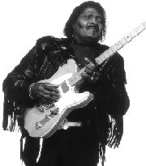

 Его называли Мастер Телекастера, The Ice Man, Хьюстонский Смерч (The Houston Twister) и Бритва (The Razor Blade). За свое более чем двадцатипятилетнее царствование на блюзовом престоле Альберт Коллинз заслужил все эти прозвища, а вместе с ними и восхищение своих коллег, ведущих музыкантов блюза, среди которых - Фредди Кинг, Альберт Кинг, Эрик Клэптон, Стиви Рэй Воэн (Vaughan), Джордж Торогуд (Thorogood), Роберт Крэй (Cray) и множество других. Вдобавок, большинство из них считают его своим близким другом, а зачастую – и учителем.Типична высокая оценка Крэя, близко узнавшего старшего музыканта на турах '76-'78 годов, где Крэй и его группа не только открывали концерты, но и часто играли с самим Коллинзом. “Он был для нас как отец. – говорит Крэй, - Он учил как жить на турах, в дороге. Мы классно провели время и дружим до сих пор. Я и сейчас повернут на нем как на гитаристе. Как он тянет струны – это же потрясающе! По-моему, гитары нужно мучить. Don’t Loose Your Cool - знаешь эту вещь? Чувак, он же там лабает как зверь! Да у него пальцы как медиатор! Они же как каменные.” За свою жизнь Коллинз встречал, вместе играл и записывался, ездил на туры и повлиял на самых разных музыкантов, среди которых не только блюзмены. Он играл с Фрэнком Заппой, Гранд Фанк, Двейном Аллманом и записывался с Айком и Тиной Тернер. Он занял место Хендрикса в группе Литтл Ричарда, а несколько лет спустя, когда они вместе играли на фестивалях, связался с Джими снова. Незадолго до смерти Хендрикса они собирались дать серию концертов с Альбертом открывающим дл Hendrix Experience.
За последние 25 лет Альберт играл на турах практически с каждым значительным блюзовым музыкантом и стал одним из самых популярных исполнителей на американских и европейских концертах и фестивалях. За последние годы он записывался с такими музыкантами (и поклонниками его музыки) как коллеги-блюзмены Джонни Копленд и Роберт Крэй (альбом 1986 г. Showdown! получивший Гремми), Джек Брюс, Дэвид Боуи, Гэри Мур и Джон Зорн, среди прочих. Несколько выступлений на телевидении и сьемки в фильме “Adventures in Babysitting” 1987 г. еще упрочили репутацию Коллинза. А его выступление на всемирно транслировавшемся концерте Live-Aid вместе с его близким другом Джорджем Торогудом смотрели примерно 1.8 биллиона зрителей!
Немалый путь пришлось проделать музыканту. Альберт родился 1 октября 1932 г. в техасском фермерском поселке Леоне (Leone), с населением 165 человек, 125 миль от Хьюстона, столицы Техаса. В 1939 г. фермер, на которого работал отец Альберта, умер, и семья Коллинзов перебралась в Хьюстонский негритянское гетто, Third Ward. Именно здесь мальчик впервые заинтересовался блюзом. (В то же время по соседству росли будущие гитаристы Джонни Копленд и Джонни “Guitar” Ватсон.) Характерно, что сперва Альберт увлекался джамп-блюзом (популярный в 30-е г. стиль, имеющий больше общего с джазом; исполнялся обычно составом из нескольких духовых, вокала и ритм-секции – фортепьяно, бас, ударные), а его любимыми музыкантами были Луи Джордан (Louis Jordan) и Джимми Лансфорд (Jimmie Lunceford), чьи записи он знал с одинадцати лет. Он начал брать уроки фортепиано, но вскоре бросил и занялс гитарой. Ему покровительствовал его старший двоюродный брат, Виллоу Янг, близкий друг тогдашнего короля Хьюстонского акустического блюза, Сэма “Lightnin’” Хопкинса. Как рассказывает он сам, учитьс играть Альберт начал на самодельном инструменте из сигарной коробки с приделанным грифом и струнами из проволоки. Вскоре в обмен на работу в огороде соседский плотник сделал ему настоящую гитару из дуба, и даже положил внутрь несколько погремушек от гремучей змеи для улучшени резонанса. После покупки своего Телекастера Альберт еще долго хранил этот инструмент.
Как только Альберту в руки попала гитара и Виллоу Янг научил его нескольким аккордам, “Я забыл про пианино напрочь,” вспоминает музыкант. Янг не только научил его основам гитарной игры, но и показал два открытых строя – ми минор (EBEGBE) и ре минор (DADFAD) – которыми музыкант пользуется до сих пор. Перестроенна гитара, каподастр на седьмом или восьмом ладу и игра пальцами вместо медиатора создают характерный, неповторимый “Коллинз-саунд”. Когда он уже неплохо играл, Альберт попыталс переучиться на стандартный строй, но через пару недель бросил и стал настраивать гитару по-прежнему. “Так лучше звучит” – утверждает он.
Звук был всегда для него очень важен. “Когда я начал играть” – говорит он в интервью с журналом Guitar World, - “Я старался звучать иначе, чем другие. Я слушал Би Би Кинга и Ти-Бон Вокера и Гитар Слима и всегда старался избегать такого же звука, а играть в своем собственном стиле. Минорный строй и каподастр для этого очень важны. Я начал использовать каподастр после встречи с Гейтмауф Брауном (Gatemouth Brown). Он сильно на мен тогда повлиял. В 50-х Гейт был звездой и всегда был в разьездах. Но когда мне удавалось его поймать, мы всегда разговаривали о музыке. Кстати, довольно долго играл на полуакустическом Эпифоне, пока впервые не увидел Гейтовский Фендер Сквайр. Я тут же пошел и тоже купил себе Сквайр; это было в 1952-м году. Он долго у меня был, а потом я приобрел Телекастер, и с тех пор играю только на нем.” Об игре пальцами Коллинз замечает: “Я пару раз пытался играть медиатором. Не нравится, и все тут. Мы часто встерчались в Техасе с Фредди Кингом, и он у меня спрашивал, почему я не пользуюсь thumbpick'ом, но я как-то не могу им играть. Конечно, медиатором можно играть быстрее. Но мне нравится чувствовать гитару под пальцами.” Интересно, что и джазовый гитарист Вес Монтгомери, один из любимых музыкантов Коллинза, избегал медиаторов. Он тоже предпочитал звук игры пальцами, несмотря на потерю в скорости. Люди, знакомые с их музыкой, согласятся, впрочем, что у обоих было достаточно скорости, чтобы сыграть то что им захочется. Игра пальцами ничуть их не мешала. Зато они многое приобрели в других областях – контроле и, главное, звуке.
Под руководством Виллоу Янга Коллинз быстро прогрессировал как гитарист. Многому он научился и с любимых пластинок. К шестнадцати годам он уже играл вечерами в одном из Хьюстонских ночных клубов, возглавляя трио (гитара/фортепиано/ударные). Владельцы клуба были друзьями его родителей и заодно присматривали за юным Альбертом. Группа играла там каждую пятницу и субботу, а через полгода к ним присоединилс басист “чтобы звук был основательнее.” Хотя к тому времени Альберт уже взялся за электрогитару, они все еще играли песни Lightnin’ Хопкинса. “Это была музыка которую люди хотели слушать. Хопкинс тогда был на большом подьеме.” Через год Альберт перебрался в Клуб Манхеттан в Галвстоне (Galveston) и два следующих года экспериментировал, добавив духовую секцию. “Мне тогда нравилось звучание биг-бэнда,” – вспоминает он – “типа Джимми Лансфорда и Томми Дорси, знаешь, со всеми духовыми.” Постепенно он научился органично совмещать их со своей ритм-секцией, ориентированной на гитару. Техасские блюзовые группы в основном были довольно большими, и блюзмены привыкли работать с духовыми. Альберт хотел собрать именно такую, смешанную, группу, с которой бы куда чаще приглашали играть в хорошие клубы и с которой легче можно было бы сделать себе имя среди Техасских музыкантов. Но только когда они начали ездить по городам Юга с певцом Пайни (Piney) Брауном в начале 50-х, Альберт начал серьезно развиваться как инструменталист, встречая множество других музыкантов. Его группа играла по всему Техасу, Миссиссипи, Луизиане, а последние шесть месяцев провела в Новом Орлеане. Этот тур очень расширил музыкальные горизонты Коллинза, который с готовностью воспринимал все, что слышал, выбира элементы, органично входящие в его формирующийс стиль. По его собственным словам, за четыре года, проведенные на дороге, он стал по-новому воспринимать гитару; он приобрел неповторимый инструментальный почерк, начал развивать свою музыкальную индивидуальность.
К середине 50-х Альберт опять осел в Хьюстоне. Хотя ему пришлось найти “дневную работу” чтобы оплатить накопившиеся долги, он продолжал играть, не распуская своей группы, и оттачивал приобретенные навыки, совершенствовал свой персональный стиль. В 1958 он записал свой первый сингл, “The Freeze / Collins Shuffle” вышедший на маленьком Хьюстонском лейбле Kangaroo. Пластинка имела успех и принесла Альберту вместе с известностью возможность бросить побочные работы и заниматься только музыкой. Его начали приглашать на совместные концерты такие светила как Гейтмауф, Ти-Бон Вокер и Гитар Слим. По горячим следам Коллинз записал целую серию инструментальных блюзов с фанковым звучанием, среди них “De-Frost” и “Albert’s Alley” вышедшие в 1960-м на Hall-Way Records. Коллинз вспоминает, как на этой сессии он впервые встретил двух подростков-фанатов – Джонни Винтера и Дженис Джоплин. “Джонни тогда было шестнадцать, а его брат Эдгар вообще был ребенок. А Дженис тогда еще не пела, но очень прикалывалась по блюзу.” Примерно в это же время на туре Литл Ричарда Альберт встретил Джими Хендрикса, тогда еще тощего подростка-гитариста. “Я познакомилс с Хендриксом когда ему было семнадцать. Он тогда играл с Литл Ричардом. Я занял его место, когда он ушел из группы, и доиграл остаток тура. О, он уже тогда мощно играл; а как он играл блюз… Мы сидели в маленьком кабаке – Клуб 500, в Хьюстоне, как раз в том районе где я вырос. Литл Ричард мне говорит: 'У меня тут есть чувак, ты должен послушать как он играет.' Я говорю, 'Ну, приводи его завтра.' У мен тогда было четверо духовых и ритм, я думал что круче нас никого нету. Назавтра Литл Ричард его мне представил, я и говорю: 'Хочешь джемовать – подключайся.' Начали мы играть, так он так втащился что чуть со сцены не вылетел. Басист мой мне говорит: 'Надо его малость придержать, а то он так на столики рухнет.' Да, он серьезно тогда играл. Потом, в Калифорнии, он поменял стиль, ушел в психоделик. Он круто поднялся. Последний фестиваль, на котором я с ним вместе играл был в Девоншир Даунс; я, он и Айк и Тина Тернеры, но ему заплатили больше всех. Когда у него и Бадди Майлза была эта Band of Gypsys, мы договорились о совместном туре. Я так обломался, когда услышал что он умер, просто играть не мог. Я одно врем помогал его брату, Леону; он и играет как Джими.”
В 60-е Альберт продолжал играть в блюзовых клубах родного города, время от времени выезжая на короткие туры. Остальной блюзовый мир знал о нем по синглам, периодически выходившим на маленьких Техасских лейблах – Great Scott, Brylen и TFC. Для последнего из них Альберт записал свой дебютный лонгплей, The Cool Sounds of Albert Collins. На альбоме были такие его хиты, как, например, “Frosty,” “Sno-Cone,” “Frost Bite,” “Thaw-Out,” “Icy Blue,” и “Don’t Lose Your Cool.” К концу 60-х эта пластинка стала раритетом и среди коллекционеров стоила по 40-50 долларов, а то и больше. В 1969-м Blue Thumb Records переиздали ее под названием Truckin’ With Albert Collins, а вскоре после этого она вышла на немецком лейбле Crosscut под первоначальным названием. В конце 1968 года судьба музыканта, наконец, начала меняться. Он встретился с певцом группы Canned Heat Бобом Хайтом (Hite) который был давним поклонником музыки Коллинза. Когда Canned Heat впервые попали на гастроли в Хьюстон, Хайт решил его разыскать. И Хайт, и гитарист группы Генри Вестин были ошеломлены мощью и выразительностью игры Коллинза, а кроме того, манерой спрыгивать в толпу, волоча за собой тридцатиметровый провод, и бродить, играя, по аудитории. Этот трюк Альберт освоил когда увидел в 1953-м году саксофониста Биг Джея Макнелли прогуливающимся во время концерта между слушателей. Когда Canned Heat вернулись в Калифорнию, музыканты с восторгом рассказывали о фантастическом гитаристе из Техаса. Хайт описывает свои впечатления от встречи с ним на обложке первого альбома Коллинза на Imperial Records, который назывался Love Can Be Found Anywhere (Even In A Guitar):
“Пондероза – маленький клуб на улице Даулинг в Хьюстоне, человек на пятьдесят. По средам клуб наполнен счастливыми, довольными людьми. Источник всеобщего хорошего настроения, помимо горячительных напитков – музыка Альберта Коллинза. В основном это инструменталы, хот иногда Альберт поет – а иногда за микрофон берется один из посетителей. Альберт – гитарист со стажем, и в Техасе его многие знают. К сожалению, он очень мало известен вне штата. Генри Вестин всегда восхищался гитарной игрой Коллинза, а во врем нашего недавнего визита в Техас нам довелось увидеть его вживую в клубе Пондероза. Вернувшись в Калифорнию, мы немедленно известили Imperial Records о великолепном, но совершенно неизвестном гитаристе из Хьюстона. С помощью нескольких энтузиастов блюза и Imperial Records Альберт совершил свое первое турне по Западному Побережью, принесшее ему целый легион новых последователей. Гитара Альберта настроена в ре-минор, и играет он пальцами, а не медиатором. – писал в заключение Хайт, – Пока еще никому не удавалось успешно имитировать его стиль игры и технику. Встреча с ним была для меня откровением. Я слышал много бледных копий, но наконец-то мне довелось услышать оригинал. Годы практики отточили его игру до совершенства. Многие блюзмены называют Альберта своим любимым гитаристом – например, Альберт Кинг, – но только теперь к нему пришло и массовое признание. Итак, перед вами Альберт Коллинз – лучший из Техасских блюзменов!” Три альбома, записанные на Imperial Records – Love Can Be Found Anywhere ('69), Trash Talkin’ ('69) и The Compleat Albert Collins ('70) – представили американским слушателям Коллинза в лучшей форме. Мощная, искрометна игра; уникальная музыкальная концепция и, главное, самозабвенная, сокрушительна интенсивность звенящая в каждой ноте его Телекастера – все это, наконец, стало доступно не только его друзьям и соседям, не только кучке энтузиастов блюза, разыскивавшим его ранние синглы, но и широкой публике. Эти альбомы установили его репутацию в мире блюза. Недавно они вышли на двух дисках под названием Complete Imperial Recordings.
В это же время Альберт переехал в Лос Анджелес, где быстро стал одним из самых популярных музыкантов на бьющей ключом блюзовой сцене Западного побережья. Он играл в Лос Анджелесском Эш Гров, в Сан Францисских Филморе и Матриксе (престижные концертные залы), да и везде, куда его заносил блюзовый бум конца 60-х. Казалось, наконец-то пришло его время – но нет. Как это бывает, безвкусица в очередной раз восторжествовала, и мода на блюз сменилась модой на хард рок, а чуть погодя – и вовсе на диско. В 1971 Альберт записал еще один альбом There’s Gotta Be A Change для лейбла Tumbleweed, к несчастью, скоро обанкротившегося. Большую часть 70-х Коллинз провел без постоянного контракта, выпуская врем от времени синглы, помогавшие ему держаться на плаву, играя в блюзовых клубах Западного побережья и на больших фестивалях.
В 1977-м он подписал контракт с чикагским Alligator Records, и его карьера опять пошла в гору. Он записал целый ряд прекрасных альбомов, лучшими из которых были концертные записи Frozen Alive! (’81) и Live In Japan (’84), а также уже упоминавшийся Showdown! с Коплендом и Крэем, заработавший всем троим Гремми. Недавно Альберт сменил лейбл на Point Blank Blues. Он продолжает радовать слушателей и коллег-музыкантов своей игрой, которая, как вино, только улучшается с годами. Коллинз строго следует совету который он дает молодым музыкантам: “Кто перестал слушать, тот начал гнить,” – афоризм, которого он придерживался со дня, когда впервые взял гитару. “Много кто” – говорит он сам – “и я не хочу называть имен, начинают слишком полагаться на то, что уже сделали. Так не работает, чувак. Я играю дл молодых, и я не хочу видеть людей, которые уходят, потому что им скучно. Нет!”
Пит Велдинг, из Complete Imperial Recordings. По-видимому, статья эта была написана незадолго до смерти Альберта Коллинза. 24 ноября 1993 года он умер от рака печени. Ему был 61 год. |